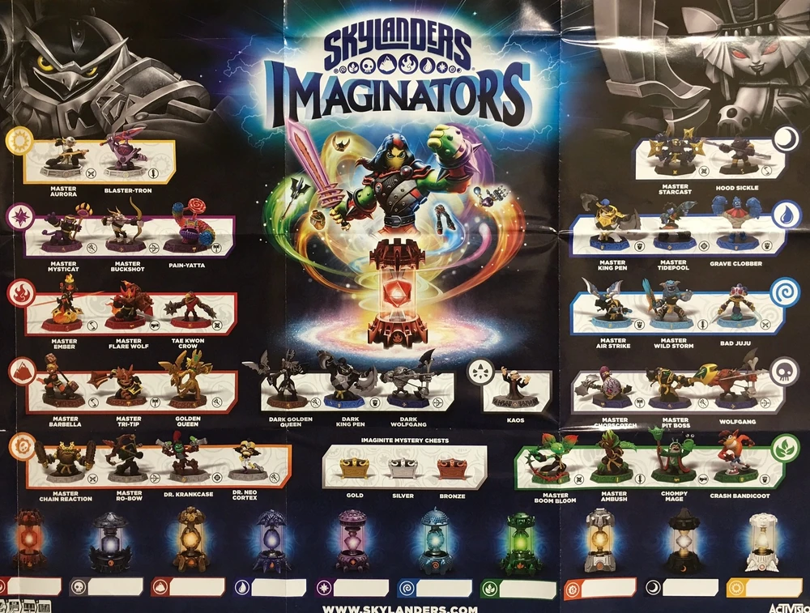

Informació dels Skylanders
Master Aurora
Master Aurora, un Sensei del Sol, utilitza llancers de llum per atacar des de lluny. És una figura elegant amb plomes blanques i daurades, representant l’element Llum. Apareix com a mentor i combatent en Skylanders: Imaginators, amb habilitats de suport i atacs ràpids, destacant per la seva precisió i gràcia.
Blaster-Tron
Blaster-Tron, un Sensei del Foc, lluita amb canons i míssils explosius. Amb un disseny robòtic i vermell, és un expert en combats a mitjana distància, guanyant-se el respecte com a mestre en Skylanders: Imaginators, amb poders devastadors i tàctiques tècniques.
Master Mysticat
Master Mysticat, un Sensei del Foc, utilitza un ventall màgic i atacs felins. Amb un aspecte de gat místic i roba vermella, destaca per la seva agilitat i habilitats d’evasió a Skylanders: Imaginators, oferint un estil sigil·lós i ràpid.
Master Buckshot
Master Buckshot, un Sensei de la Terra, dispara bales de fang amb la seva escopeta. Amb un disseny de porc robust i marró, és un mestre de combat cos a cos en Skylanders: Imaginators, ideal per situacions de força bruta i resistència.
Pain-Yatta
Pain-Yatta, un Sensei de la Vida, lluita amb confits explosius i un martell de xup-xup. Amb un disseny de pinata malvat i colors vius, afegeix humor i poder destructiu a Skylanders: Imaginators, combinant dolçor i caos en els seus atacs.
Master Ember
Master Ember, un Sensei del Foc, lluita amb flames i una llança. Amb un disseny de drac petit i vermell, és un combatent feroç i protector a Skylanders: Imaginators, amb habilitats de foc intens i agility explosiva.
Master Flarewolf
Master Flarewolf, un Sensei del Foc, ataca amb urpes i flames. Amb pell vermella i ulls ardents, és un llop ferotge i ràpid a Skylanders: Imaginators, ideal per combats dinàmics i furiosos.
Tae Kwon Crow
Tae Kwon Crow, un Sensei de l’Aire, utilitza arts marcials amb potes i plomes. Negre i amb ulls brillants, és un mestre àgil i ràpid en Skylanders: Imaginators, inspirat en el kung fu, amb moviments precisos i aeris.
Master Barbella
Master Barbella, una Sensei de la Terra, utilitza una barra de ferro i força sobrehumana. Amb un disseny musculós i roba marró, és una guerrera poderosa a Skylanders: Imaginators, destacant per la seva resistència i poder brut.
Master Tri-Tip
Master Tri-Tip, un Sensei de la Terra, lluita amb una destral de tres puntes i atacs de foc. Amb un disseny de rinoceront vermell i robust, és un mestre destructiu i tenaç a Skylanders: Imaginators, excel·lint en combats pesants.
Golden Queen
Golden Queen, una vilana reformatada com a Sensei de la Terra, utilitza poders daurats i màgia mineral. Amb robes daurades i or, és una figura majestuosa i poderosa a Skylanders: Imaginators, aportant tàctiques estratègiques.
Master Chain Reaction
Master Chain Reaction, un Sensei de la Tecnologia, lluita amb cadenes i explosius. Amb un disseny robòtic i gris, és un mestre estratègic a Skylanders: Imaginators, amb atacs en cadena devastadors i precisos.
Master Ro-Bow
Master Ro-Bow, un Sensei de la Tecnologia, dispara fletxes mecàniques amb el seu arc robòtic. Amb un disseny de robot arquero i metall brillant, és un mestre precis i tàctic a Skylanders: Imaginators, amb habilitats de llarga distància.
Dr. Krankcase
Dr. Krankcase, un Sensei de la Tecnologia, utilitza armes de gas tòxic i mecàniques. Amb un disseny de científic malvat i roba gris, és un vilà reformat a Skylanders: Imaginators, aportant tàctiques tòxiques i explosives.
Dr. Neo Cortex
Dr. Neo Cortex, un Sensei de la Tecnologia, lluita amb gadgets i raigs descontrolats. Amb un disseny de científic amb casquet, d’origen *Crash Bandicoot*, aporta enginy i maldat reformatada a Skylanders: Imaginators.
Master Starcast
Master Starcast, un Sensei de la Llum, utilitza estrelles lluminoses i raigs de llum. Amb un disseny de estrella viva i colors brillants, és un mestre radiant i ràpid a Skylanders: Imaginators, amb atacs cegadors.
Hood Sickle
Hood Sickle, un Sensei de la Mort, lluita amb falçs i ombres. Amb un aspecte de fura fosca i roba negra, és un mestre sigil·lós a Skylanders: Imaginators, especialitzat en atacs furtius i tàctiques d’amagatall.
Master King Pen
Master King Pen, un Sensei de l’Aigua, utilitza un trident i glaçons. Amb un aspecte de pingüí reial i blau, és un mestre noble i fort a Skylanders: Imaginators, amb habilitats de gel i protecció.
Master Tidepool
Master Tidepool, una Sensei de l’Aigua, ataca amb vents i aigües marejades. Amb un disseny de sirena i colors blaus, és una mestressa àgil i fluid en Skylanders: Imaginators, controlant l’aigua amb precisió.
Grave Clobber
Grave Clobber, un Sensei de la Terra, utilitza roques i cops devastadors. Amb un disseny de monstre de pedra i marró, és un mestre robust i destructiu a Skylanders: Imaginators, ideal per combats pesats i resistents.
Master Wild Storm
Master Wild Storm, un Sensei de l’Aire, ataca amb vents i llamps. Amb plomes blanques i colors elèctrics, és un mestre ràpid i tempestuós a Skylanders: Imaginators, controlant el temps amb fúria i energia.
Bad Juju
Bad Juju, un Sensei de la Vida, lluita amb màgia vegetal i atacs verinosos. Amb un disseny de xaman i robes verdes, és un mestre curatiu i ofensiu a Skylanders: Imaginators, amb poders naturals i regeneratius.
Master Snap Shot
Master Snap Shot, un Sensei de l’Aigua, dispara fletxes gelades amb el seu arc. Amb un disseny de cocodril blau i escates, és un mestre precís i letal a Skylanders: Imaginators, controlant el gel amb habilitats de llarga distància.
Master Pit Boss
Master Pit Boss, un Sensei de la Terra, utilitza un martell i atacs terrenals. Amb un disseny de monstre robust i marró, és un mestre de força i destrucció a Skylanders: Imaginators, especialitzat en combats intensos.
Wolfgang
Wolfgang, un Sensei de la Mort, utilitza guitarres i ones sonores. Amb un disseny de llop rockero i negre, és un mestre carismàtic i destructiu a Skylanders: Imaginators, amb música com arma principal i atacs sonors devastadors.
Master Boom Bloom
Master Boom Bloom, una Sensei de la Vida, lluita amb plantes explosives. Amb un disseny de fada verda i flors, és una mestressa creativa i destructiva a Skylanders: Imaginators, controlant la natura amb explosions florals.
Master Ambush
Master Ambush, un Sensei de la Vida, utilitza atacs amb vinya i fulles. Amb un disseny de planta amb ulls brillants i roba verda, és un mestre sigil·lós i ràpid a Skylanders: Imaginators, amb tàctiques amagades i atacs sorpreses.
Chompy Mage
Chompy Mage, un Sensei de la Vida, invoca Chompies i llança màgia verda. Amb un disseny de mag amb barret i roba verda, és un mestre excèntric a Skylanders: Imaginators, especialitzat en hordes de criatures i màgia caòtica.
Crash Bandicoot
Crash Bandicoot, un Sensei de la Terra, utilitza salts i atacs amb el seu gir. Amb un disseny de bandicut taronja, d’origen *Crash Bandicoot*, aporta caos i energia a Skylanders: Imaginators, amb moviments ràpids i destructius.
Kaos
Kaos, el vilà principal i líder dels Doomlanders, utilitza màgia caòtica i atacs descontrolats. Amb un mantell negre, capell i una actitud infantil i fanfarrona, desafia els Skylanders a Skylanders: Imaginators, intentant conquerir Skylands amb els seus plans maldestres.
Versions Dark
Les Versions Dark són versions corruptes i fosques de personatges com la Golden Queen i King Pen, amb poders malèfics i dissenys foscos. A Skylanders: Imaginators, actuen com a enemics o reptes especials, desafiant els Skylanders amb la seva força corrupta.
Cofres
Els Cofres són objectes col·leccionables a Skylanders: Imaginators, contenint or, millores i elements per als Imaginators. Amb dissenys daurats, platejats i bronzes, apareixen al pòster com a incentius per explorar i progressar en el joc.
Vidres Imaginate
Els Vidres Imaginate són llanternes místiques que representen els elements de Skylands (Foc, Aigua, Terra, etc.) i són essencials per crear i personalitzar els Imaginators a Skylanders: Imaginators. Al pòster, apareixen com a símbols visuals dels elements del joc, afegint profunditat a l’experiència.